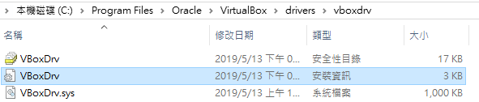
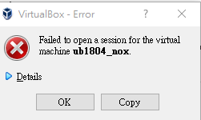
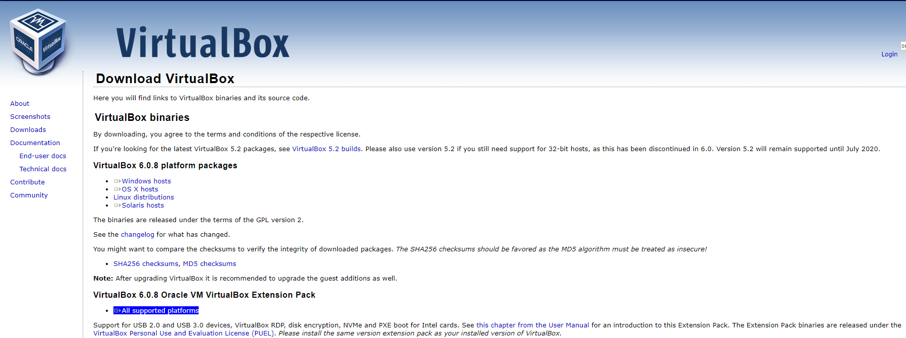
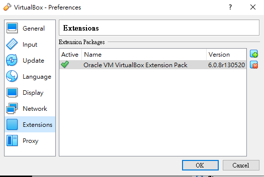

40623226-Week
Week4:
設定個人ssh，並利用ssh git clone自己這組倉儲到隨身碟，建立ungit進行倉儲更新

.PNG)
Week5:
了解V-rep 並和組員討論手足球過程產生的問題
Week6:
這週完成V-rep模擬

Week8:

一開始從Onshape上匯下來的圖檔，導入模組後，發現部分零件被合併無法被拆開，無法解決問題，最後只能從別的地方下手。

這裡先做底部的動態建模，先生成網格之後再進行三角形編輯模式編輯。

↓無法解決部分

因為自己畫的圖會發生問題，所以後面用內建模組來設計，還有很多功能不了解，
只做了一部分的東西。
綠色部分利用shape edit模式 ，對該部分網格進行合成為圓柱狀，並建立關節

圓柱銀色部分為刪除網格的地方

↓最後做到這裡，還有一部份功能不太會使用

Week10:
建立VirtualBox 虛擬主機運到下面問題
Cannot access the kernel driver! Make sure the kernel module has been loaded successfully.
解決辦法 :
進入VirtualBox的安裝路徑下的drivers\vboxdrv目錄中找到VboxDrv.inf右鍵點選安裝重新啟動VirtualBox即可。

問題2:

解決辦法:
到官網安裝擴展包 "All supported platforms"

完成後出現下圖即可正常啟

Week11:
組員分工內容

網站更動

Week12:
首先到fork內自己的倉儲後點選Setting修改分支為bg4
把scrum-1/cd2019 master 合併到40623226/cd2019b bg4

輸入標題後點選Create
完成後到Pull request 就可看到待提交內容
點進去再點選Merge pull request完後再Confirm 即可
下次提交到scrum則對調即可

Week13:
討論專案執行規劃
並討論vrep模擬
Week14:
上網查閱資料並總結執行計畫、動機、結論
Week15:
調整Vrep程式內容


position_BR=sim.getObjectPosition(BRod_handle,-1)
桿子位置 = 模擬得到物件位置(處理的物件 , -1啟動)
position_S=sim.getObjectPosition(Sphere_handle,-1)
球的位置 = 模擬得到物件位置(處理的物件 , -1啟動)
X = position_S[1] - position_PR[1]
X = 球的位置 - 桿件的位置 (在X軸上)
Y = position_S[2] - position_PR[2]
Y = 球的位置 - 桿件的位置再(在Y軸上)
if 1 then
if X <= -0.05 then --goalkeeper
(假設X <= -0.05時 = true)
sim.setJointTargetVelocity(right_joint_r1,-5)
elseif X > -0.05 then
(額外假設X> -0.05時 = true )
sim.setJointTargetVelocity(right_joint_r1,5)
end
Y = Y*5
Y = 上方Y 在Y軸位置差* 5倍
sim.setJointTargetVelocity(right_slider_r1,Y)
模擬設定軸的目標速度(處理後的物間 , 上方 Y 追蹤的速度大小)


Y = 上方Y在Y軸的位置差*5倍
模擬設定的目標速度(處理後的物件 , Y的追蹤速度大小)
elseif (額外假設求在Y軸上 > 0.1) then (接著)
[ if (假設X <= -0.02時 = true) then (接著)
模擬設定軸的目標速度(處理後的物件 , 速度大小(負號為方向))
elseif (額外假設X> -0.02時 = true ) then (接著)
模擬設定軸的目標速度(處理後的物件 , 速度大小)
YYYYY = 上方Y2 在Y軸位置差* 5倍
模擬設定軸的目標速度(處理後的物間 , 上方 Y2 追蹤的速度大小)
Week16:
Week17:
40623225-Week << Previous Next >> 40623227-Week